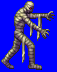
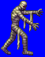
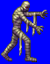
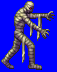

Height: About 2 meters Weight: About 200 lbs.
Habitat: Graveyard Origin: Egypt
Meaning: From " mummia", the oil used to help preserve corpses in ancient Egypt.
A man-shaped monster whose entire body is wrapped in bandages.In ancient Egypt, corpses were preserved in this way because they believed that the soul left the body only temporarily, to return at a later time. In games, mummies usually appear as cursed denizens of long-lost pyramids, protecting the treasure left behind by the ancients.